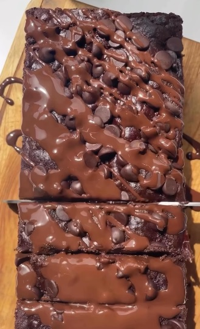

Recetas Fit

Ingredientes
- 1 TAZA DE HARINA DE AVENA
- 1/2 DE CACAO EN POLVO
- UNA CUCHARADITA DE POLVO PARA HORNEAR
- UN HUEVO
- 200 ML DE LECHE DESCREMADA
- 2 CUCHARADAS DE MIEL
- OPCIONAL CHIPS DE CHOCOLATE
Pasos
- MEZCLAR
- PASAR A UN MOLDE
- HONEAR A 180 GRADOS POR 20 MINUTOS